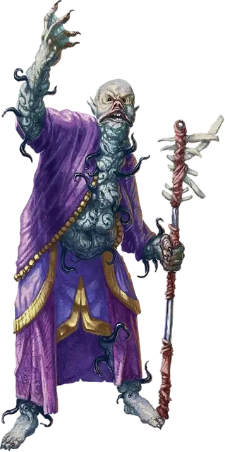

Провидец звёздных порождений
Star Spawn Seer
Средняя Аберрация, хаотично-злая

Класс Доспеха 17 (природный доспех)
Хиты 153 (18к8 + 72)
Скорость 30 футов
| мод | спас | ||
|---|---|---|---|
| СИЛ | 14 | +2 | +2 |
| ЛОВ | 12 | +1 | +6 |
| ТЕЛ | 18 | +4 | +4 |
| мод | спас | ||
|---|---|---|---|
| ИНТ | 22 | +6 | +11 |
| МДР | 19 | +4 | +9 |
| ХАР | 16 | +3 | +8 |
Навыки Восприятие +9
Сопротивление урону холод; дробящий, колющий, рубящий от немагических атак
Иммунитет к урону психическая энергия
Иммунитет к состояниям очарование, испуг
Чувства тёмное зрение 60 футов, пассивное Восприятие 19
Языки Общий, Глубинная речь, Подземный
Опасность 13 (10000 опыта)
Бонус мастерства +5
Среда обитания Болото, Город, Горы
Особенности
Дефазированное перемещение. Провидец перемещается сквозь существ и объекты, как если бы они были труднопроходимой местностью. Каждое существо, сквозь которое он перемещается, получает 5 (1к10) урона психической энергией; ни одно существо не может получить этот урон более раза за ход. Провидец получает 5 (1к10) урона силовым полем, если завершает движение внутри объекта.
Действия
Мультиатака. Провидец совершает две атаки Кометным посохом, или использует Психический шар дважды.
Кометный посох. Рукопашная атака оружием: +11 к попаданию, досягаемость 5 фт., одна цель. Попадание: 9 (1к6+6) дробящего урона, или 10 (1к8+6) дробящего урона, если используется двумя руками, плюс 18 (4к8) урона психической энергией и цель должна преуспеть в спасброске Телосложения Сл 19, иначе станет недееспособной до конца своего следующего хода.
Психический шар. Дальнобойная атака оружием: +11 к попаданию, досягаемость 120 фт., одна цель. Попадание: 27 (5к10) урона психической энергией.
Сократить расстояние (перезарядка 6). Провидец искажает пространство вокруг существа, которое может видеть в пределах 30 фт. от себя. Существо должно пройти спасбросок Мудрости Сл 19. В случае провала цель вместе со всем снаряжением, которое оно несёт или носит, магическим образом телепортируется на 60 фт. в свободное пространство, которое может видеть провидец, а каждое другое существо в пределах 10 фт. от начальной точки телепортации получает 39 (6к12) урона психической энергией. В случае успеха спасброска цель получает 19 (3к12) урона психической энергией.
Реакции
Искажение пространства. Когда по провидцу попадают любой атакой, он телепортируется, меняясь местами с другим звёздным порождением, которую он может видеть в пределах 60 фт. от себя. Другое звёздное порождение получает урон от атаки вместо провидца.
Описание
Материальный план представляет только небольшой кусочек мультивселенной. За пределами хорошо изученных планов существования лежат измерения, что смертельно опасны для смертных. Некоторые настолько враждебны, что даже мгновенного контакта с таким местом достаточно, чтобы свести смертного с ума. Но есть существа, для которых подобные измерения являются родными: существа, что вечно голодают, ищут, завывают, а иногда ещё и видят сновидения. Эти Древние старше всех прочих смертных рас и всегда внушают ужас разумным гуманоидам.
Однако каким сильным не было желание вторгнуться и захватить Материальный План, Древние не могут или не хотят покидать свои измерения. Одни заточены в своих измерениях внешними силами, некоторые неразрывно связаны со своими домашними реальностями, а другие просто не могут найти даже подобие выхода из собственного измерения.
Предвестники рока. Существа известные как порождения звёзд – это предвестники, рядовые солдаты, или лейтенанты Древних, способные принимать форму гуманоида, что может путешествовать по Материальному Плану. Чаще всего они пребывает следом за кометой...или, возможно, этот феномен предупреждает о том, что поблизости есть порождение звёзд, и оно доступно для общения. Если знамения верны, то колдуны и культисты спешат собраться вместе, читают вслух пренебрежительные слова и проводят безумные ритуалы, что направляют на верный путь пылающее порождение звёзд в этот мир.
Провидец звёздных порождений.С провидцем звёздных порождений зачастую сталкиваются в качестве лидера культа Древних. Обычно провидец является единственным членом культа, что обладает властью над ужасами, которым поклоняется культ.
Сущность, появляющаяся в виде провидца звёздных порождений в Материальном Плане, обычно пребывает как нечто чужеродное...нечто бестелесное.
Когда колдун или любой другой заклинатель устанавливает контакт с этой сущностью, она берёт контроль над телом смертного и его духом, превращая того в провидца звёздных порождений. Кем бы раньше не был тот, кто устанавливал контакт с провидцем, он исчезал навсегда, а его тело становилось склизкой, мерзопакостной тушей, не имеющей кожи, по которой ползают нечто вроде червей. Его руки становятся громоздкими, отвратительными конечностями, способные держать свой странный посох (сформировавшаяся некая смесь из плоти, костей и звёздной материи), но при взаимодействии с прочими объектами выглядят очень неуклюже и неприятно.
Провидец звёздных порождений всегда сопровождается одним или несколькими громилами звёздных порождений. Хоть громила и является достойным противником, он также является важным тактическим элементом, который используется провидцами.
Когда провидец наносит громиле урон психической энергией, громиле не наносится этот урон, а отражается и проходит по другим существам возле него.
Целью провидца является использование источников энергии и совершение обрядов, позволяющих расширить мост между уязвимым рассудком Материального Плана и полным безумия местом заточения Древних.